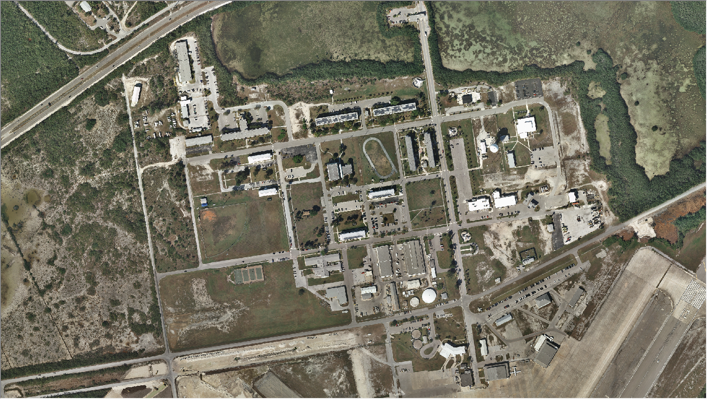

Determining Building Height Using LiDAR
Boca Chica, NASKW

Recently, I was asked to determine the height for all the buildings near the airfield at Boca Chica. I had seen some LiDAR data from 2012, but as far as I knew it really had been used for anything. Once I started looking at the data I realized it had only been processed to create a Bare Earth surface elevation raster, but nothing with the First Retun data points. ESRI had some guidance that looked pretty straight-forward so I decided to give it a shot.

First I used the First Return data to create a LAS dataset file (.lasd) to store all the .las files in one layer using ArcGIS's Create LAS Dataset geoprocessing tool. Next, I created a raster representing the surface elevation including the buildings using the LAS Dataset to Raster tool. I made sure to choose MAXIMUM for the interpolation type, because most of my buildings have pitched roofs and I wanted to represent the tallest parts of each building. I then repeated this process, but used the Bare Earth return data instead so that I would have a raster that represented the height of the ground excluding the buildings.

Next, I brought in the building footprints that I would append my height information to. I employed the Create Ranfom Points tool confined to my footprints to create 20 points within each polygon at a minimum of 1 meter from each other.

Next, I used the Add Surface Information tool and the First Return raster to determine the elevation of each point. Again, I repeated this step using the Bare Earth raster as well so that I could calculate the building height. Then I used the Summary Statistics tool to calculate the average of all the points within each building footprint for both Bare Earth and First Return rasters in a seperate table. The final step was to take the difference between the two elevations to determine my building height.

As a bonus I joined the table back to the footprints layer and opened it in ArcScene and setup the extrusion based on height to give them a 3-Dimensional shape. And that was it, with the right data and a little analysis I determined my building heights and created a 3-D representation of the area neaar the airfield.